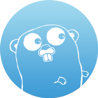
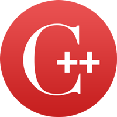
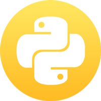

欢迎，块链开发者！¶
这些是区块链开发人员的工具。 命令行工具将允许您将服务器连接到或在以太坊区块链上运行应用程序 - 或者您自己的私人区块链。
客户端¶
为了安全目的，为Ethereum创建了三个独立的实现。 客户端具有几乎相同的功能，因此您选择的客户端可以根据平台，语言以及计划的网络使用情况进行个人选择。
如果您正在构建一个需要对以太坊网络提供最大正常运行时间保证的业务，我们建议您至少运行两个客户端的一个实例以确保可靠性。
Geth¶

Go实现被称为Geth。 Geth已经过安全审计，并且将成为面向最终用户的Mist Browser的未来基础，因此如果您有网络开发经验并且有兴趣为dapps构建前端，则应该试用Geth。
在Mac上安装¶
安装Homebrew并确保它是最新的：
brew update brew upgrade
安装Homebrew并确保它是最新的：
brew tap ethereum/ethereum brew install ethereum
有关更多信息，请参阅Mac OSX Geth上的完整文档
Windows¶
下载latest stable binary，解压缩，下载zip文件，从zip中提取geth.exe，打开命令终端并键入：
chdir <path to extracted binary> open geth.exe
有关更多信息，请参见Windows Geth上的完整文档
在Linux上安装¶
在Ubuntu上，执行这些命令：
sudo apt-get install software-properties-common sudo add-apt-repository -y ppa:ethereum/ethereum sudo apt-get update sudo apt-get install ethereum
有关其他环境和更多说明，请参见Geth的完整文档
Eth¶

C ++实现简单地称为Eth。
如果您希望通过并行运行两种不同的实现来增加安全性，或者认真对待GPU挖掘，那么C ++Eth客户端就是为您服务的。
安装：在Mac上¶
安装Homebrew，然后确保它是最新的：
brew update brew upgrade
然后使用这些命令来安装cpp-ethereum：
brew tap ethereum/ethereum brew install cpp-ethereum brew linkapps cpp-ethereum
cpp-ethereum文档详细介绍了OS X Homebrew软件包和从源代码构建OS X。
在Linux上安装：¶
如果您使用apt-get，请将其粘贴到终端中：
apt-get install cpp-ethereum
cpp-ethereum文档详细介绍了用于Ubuntu的PPA和从源代码构建Linux。
在Windows上安装¶
cpp-ethereum文档详细介绍了从源代码构建Windows。
Python¶

Python实现称为Pyethapp。 如果你有兴趣了解以太坊如何工作以及如何扩展它，这个客户端的代码基础可能是最可读的， 这并不意味着高端的使用，因为这个客户端的性能并不像清晰度和可靠性那么高。 如果你是一个Python开发者，想要构建分散的应用程序，或者对研究或学术目的感兴趣的Ethereum，这是一个很好的客户：我们邀请你看看并贡献它。
其他选项¶
- 奇偶校验[Parity Technologies]的Rust实现17
- Blockapps开发的Haskell
- 如果您有兴趣开发一个完全在Web浏览器中运行的轻型应用程序，那么我们推荐使用EthereumJS作为基础。
- 如果你想创建一个小硬件项目，请查看Raspberry Pi的实现，
- 如果你想为非Ubuntu Linux安装geth，那么我们建议你看看从源代码构建
- 如果你想在Mac上有更多的灵活性，试试Homebrew
跑我¶
Geth和Eth是运行完整以太坊节点的多用途命令行工具。 它们提供了多个接口：命令行子命令和选项，JSON-RPC服务器和交互式控制台。
为了本指南的目的，我们将重点介绍控制台，这是一个包含您可能需要的所有主要功能的JavaScript环境。 根据您的客户端，粘贴以下任一命令：
Geth的说明:
geth console
Eth说明:
Eth仍然有一个内置的控制台，但它很快就会被移除。 开始使用
eth
然后使用geth attach(如果你还有geth)或下面的npm控制台。
Eth可能需要一些时间才能启动。
npm install -g ethereum-console ethconsole
第一次启动命令行时，您将获得许可证。 在您使用之前，您必须**接受此许可证，请仔细阅读。
注意: 如果您只是想测试技术并玩耍，请勿使用主网络。请仔细阅读如何部署私有测试网络，而不必花费太多时间。
连接到一个私人测试网¶
有时你可能不想连接到现场公共网络;,相反，您可以选择创建自己的私人测试网。 如果您不需要测试公共合同，只想尝试或开发技术，这非常有用。 由于您是您专用网络的唯一成员，因此您有责任查找所有块，验证所有交易并执行所有智能合约。 这使得开发更便宜，更容易，因为您可以灵活控制个人区块链中的交易。
Geth:
geth --datadir ~/.ethereum_private init ~/dev/genesis.json geth --fast --cache 512 --ipcpath ~/Library/Ethereum/geth.ipc --networkid 1234 --datadir ~/.ethereum_private console
Eth:
eth --private 12345 --genesis-json ~/test/genesis.json --db-path ~/.ethereum_experiment
用您想用作网络ID的任何随机数替换12345。 改变生成块的内容是一个好主意，因为如果有人不小心使用真正的链连接到你的测试网络，你的本地副本 改变数据地址也会改变你本地的区块链副本，否则，为了成功地扫描一个区块，你需要针对
如果你想创建一个专用网络，出于安全原因，你应该使用不同的genesis块(一个包含Ether销售所有交易的数据库)。 您可以阅读我们的公告博客文章，了解如何生成您的文件。 在不久的将来，我们将提供更好的方法来获得其他基因块。
这些命令可以防止任何不知道您选择的密码，网络ID和创世档案的人连接到您或向您提供 如果您希望*连接到其他对等方并创建多台计算机的小型专用网络，则他们都需要使用相同的网络ID和相同的 您还必须帮助每个节点找到其他节点。 要做到这一点，首先你需要自己的节点URL：
admin.nodeInfo.enode
哪个会返回你的节点网址 - 记下它，然后在其他客户端上，告诉它们通过执行这个命令来添加你的节点：
admin.addPeer("YOURNODEURL")
您不需要将每个客户端添加到另一个客户端，因为一旦连接，他们将共享关于他们所连接的任何其他客户端的信息。
如果您使用Eth，那么只需找出您的IP并执行此命令：
web3.admin.net.connect("YOURIP:30303")
日志¶
如果你正在运行Geth，你会注意到在你的控制台上弹出了很多日志条目 - 有时在你键入的时候。 这是因为所有警告和进度信息都由客户端实时记录到您的终端中。 如果您想将日志保存到可以稍后查看的文件中，请使用以下命令：
geth console 2>>geth.log
Geth支持多个终端窗口，您可以使用一个日志和另一个日志启动一个新日志。 这会给你与原来的控制台完全相同的功能，但没有混乱。 要做到这一点，打开一个新的终端窗口并输入：
geth attach
控制台具有自动完成的命令和命令历史记录支持，在会话之间持续存在。 您可以通过按Tab键完成一个命令，然后geth将自动完成当前语句，或者在可能有多个完成时显示可用完成列表。 您可以使用向上和向下箭头键导航您的命令历史记录。
了解有关运行节点的更多信息¶
用法示例¶
创建帐户¶
为了在以太坊网络上做任何事情，你需要醚，并得到它，你需要创建一个帐户。 有各种方法可以解决这个问题，但最简单的是通过控制台。
注意：如果您在奥运阶段或开发早期运行Ethereum，不会重复发布Frontier客户端软件1.0之前生成的密钥，否则它们可能会受到重播攻击**。 备份这些密钥，并使用Frontier发布客户端创建新密钥。
personal.newAccount("Write here a good, randomly generated, passphrase!")
注意：拿起一个很好的密码并写下来。如果您丢失了用于加密帐户的密码，则无法访问该帐户。重复：没有安全网。如果没有有效的密码，无法访问您的帐户，并且此处没有忘记我的密码选项。有关详细信息，请参见本XKCD。
不要忘记你的PASSPHRASE！
您可以创建尽可能多或更少的帐户。 按照惯例，我们称您创建主帐户的第一个帐户。 您可以使用以下命令查看您的所有帐户：
web3.eth.accounts
账户的排序反映了他们创建的时间。 密钥文件存储在DATADIR / keystore下，可以通过复制其中包含的文件在客户端之间传输。 这些文件使用密码加密，如果它们包含任何数量的以太网，则应备份。 但是，请注意，如果您传输个别密钥文件，则所呈现的帐户顺序可能会发生变化，您可能无法在同一位置结束同一个帐户。 因此请注意，只要您不将外部密钥文件复制到您的密钥存储区，只依赖帐户索引即可发声。
获取任何帐户的余额¶
控制台上的所有命令实际上都是JavaScript，因此您可以创建变量和菊链功能。
您也可以将任何eth函数编写为web3.eth，因为它实际上是主web3对象的一部分。
试试这个例子：
var primaryAccount = web3.eth.accounts[0]
您现在有一个名为primaryAccount的变量，您可以在其他调用中使用该变量。 要获得任何帐户的余额，请使用函数_eth.getBalance_，如下所示：
web3.eth.getBalance(primaryAccount)
您的余额应该返回0，因为您刚刚创建了它。 为了完成接下来的步骤，您需要在账户中拥有一些以太网帐户，以便支付燃气费用。 在下一节中，您将了解什么是天然气，以及如何与网络进行交互。
一次检查所有余额¶
命令行工具是JavaScript环境，这意味着您可以像创建JavaScript一样创建函数。 例如，如果您想要一次检查所有帐户的余额，请使用此JavaScript代码段。
它会遍历每个帐户并以乙醚形式打印余额，您可以使用以下代码：
function checkAllBalances() { web3.eth.getAccounts(function(err, accounts) { accounts.forEach(function(id) { web3.eth.getBalance(id, function(err, balance) { console.log("" + id + ":\tbalance: " + web3.fromWei(balance, "ether") + " ether"); }); }); }); };
执行
checkAllBalances()
提示：如果您有许多像这样的小巧方便的脚本可以经常使用，您可以将它们保存到一个文件中，然后使用_loadScript _：一次加载它们
loadScript('/some/script/here.js')